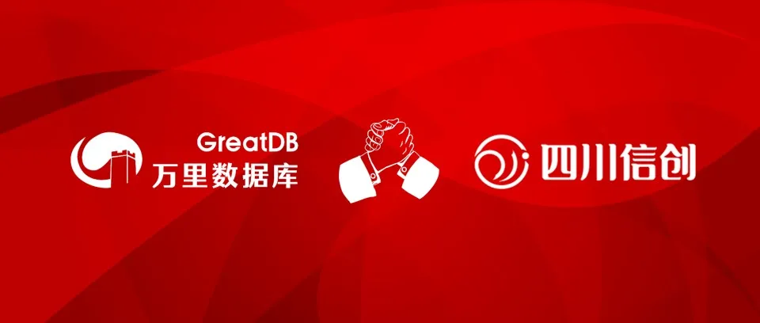

要闻 | 万里安全数据库通过四川信创中心权威评测 为四川信创发展注入新活力
近日，万里安全数据库正式通过四川信创中心权威评测。万里核心数据库产品的功能、性能、安全性等关键能力得到权威机构认证，标志着公司未来将有更多机会为四川信创产业发展注入新动能。

本次测试由四川省信创技术适配基地组织开展，依据《系统与软件工程系统与软件质量要求和评价》的文件要求，对万里数据库的功能、性能、可靠性、安全审计等方面进行统一评测，万里安全数据库测试项目全部通过。
万里数据库作为国内分布式数据库知名企业，专注数据库研发20余年，公司研发的新一代分布式数据库经过10余年的市场验证，在功能、性能、稳定性等方面均处于行业领先水平，历经500多个场景的锤炼，目前广泛应用于金融、运营商、能源、政府、互联网等多个行业领域。
在信创领域，万里数据库始终积极响应国家政策号召，紧抓产业机遇期，为推动信创发展不遗余力。公司在2019年4月正式加入信创工委会，2020月7月中标中移动OLTP数据库联合创新项目，分布式数据库包中标占比高达60%，并于今年2月入选《2020年度中国信创TOP500》，3月入围年度央采名录。一系列的中标、入围、奖项评定和机构入选，表明万里数据库在信创领域不断获得认可与信赖。
未来，万里数据库将继续紧跟时代发展步伐，强化自主研发技术实力，推进数据库核心技术创新发展，为数字化转型和信创产业发展提供强有力的技术、产品支撑，持续为数字中国建设添油助力！
关于四川信创中心
四川省信创集约化保障中心组建于2019年，是四川省委省政府推动自主可控信息技术产业发展的抓手平台，承载产业生态建设与发展的使命，包含载体公司和产业联盟两个部分，在省经信厅指导下开展工作。2020年9月，四川信创中心正式揭牌。
信创中心用创新开放共赢的理念打造四川信创产业合作大舞台，牵头发起设立省信创产业联盟，携手行业精英，汇聚优势力量，打造产业生态。联盟200余家会员单位容纳了国内芯片、操作系统、数据库、应用软件核心厂商和大量四川本地优秀企业。
推荐阅读1.再获肯定 | 万里数据库入选《2020年度中国信创TOP500》
2. 万里数据库加入广州天河信创产业联盟，助力园区核心竞争力提升
3. 万里数据库荣获最佳信创企业奖


扫码二维码
关注公众号